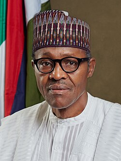

Nigerian Military Officer, Politician, Former Military Head of State, and Former President
Muhammadu Buhari (17 December 1942 - 13 July 2025) was a Nigerian military officer and politician who ruled Nigeria as a military Head of State from 1983 to 1985, and later served as the democratically-elected president of Nigeria from 2015 to 2023.
Media:

Offical portrait as President
Watch the video to learn more about Muhammadu Buhari's life and achievements.
About
Joined the Nigerian Army fighting in the Nigerian Civil War.
Earned a taciturn reputation during the presidency of Shehu Shagari due to leading of troops in the Chadian–Nigerian War.
Became Head of State in 1983 after a military coup.
Ran for president of Nigeria on the platform and support of the All Nigeria Peoples Party (ANPP) in 2003 and 2007, and on the Congress for Progressive Change (CPC) platform in 2011.
In December 2014, he emerged as the presidential candidate of the All Progressives Congress party for the 2015 general election.
Won the 2015 presidential election and was sworn in on May 29, 2015.
Re-elected as president in 2019 and served until 2023.
Work
Ccommissioned a second lieutenant and appointed Platoon Commander of the Second Infantry Battalion in Abeokuta at age 20 - January 1963
Commander, Second Infantry Battalion, brigade major of the Second Sector, First Infantry Division (April 1967 to July 1967).
2 Battalion Commander, Afikpo - 1967.
Brigade Major of the 3rd Infantry Brigade, Nsuka, Enugu - 1968.
Brigade Major/Commandant, 31st Infantry Brigade - 1970 to 71
Assistant Adjutant-General, First Infantry Division Headquarters - 1971 to 1972
Governor of the North-Eastern State - 1 August 1975 to 3 February 1976
Governor of Borno State - 3 February 1976 to 15 March 1976
Federal Commissioner for Petroleum and Natural Resources/Minister/Chairman, Nigerian National Petroleum Corporation (NNPC) - 1977 to 1978
Military Secretary, Army Headquarters and member of the Supreme Military Council - 1978 to 1979
General Officer Commanding, 4th Infantry Division: August 1980 - January 1981
General Officer Commanding, 2nd Mechanised Infantry Division: January 1981 - October 1981
General Officer Commanding, 3rd Armed Division: October 1981 - December 1983